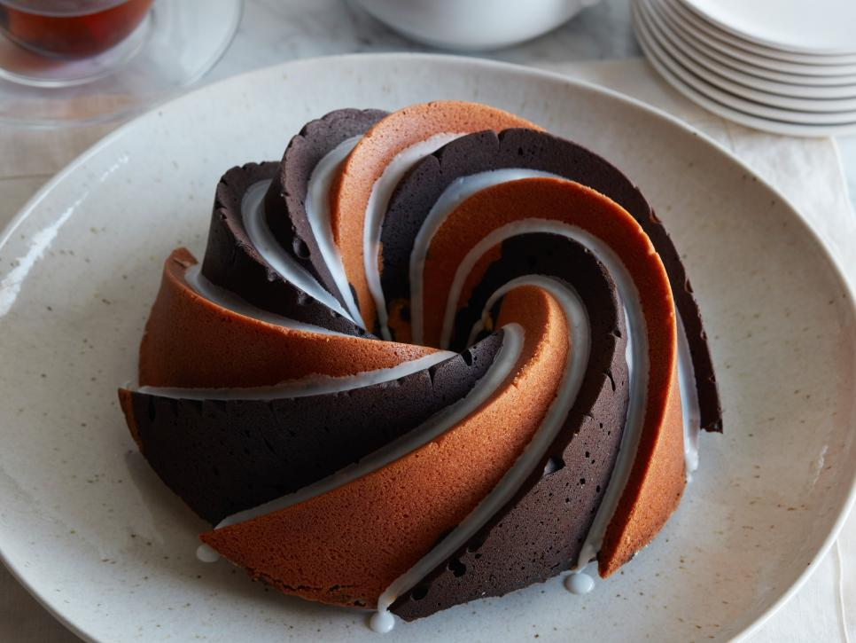

Bolo de Chocolate com Baunilha
Ingredientes
Bolo
| Manteiga sem sal |
2 Xícaras |
| Sal |
1/2 Colher de chá |
| Açúcar |
2 3/4 Xícaras |
| Ovos |
8 |
| Farinha |
3 1/2 Xícaras |
| Cacau em pó |
1 Xícara |
| Fermento em pó |
3/4 Colher de chá |
| Leite |
2 Colher de sopa |
| Extrato de baunilha |
4 Colher de chá |
Recheio
| confectioners' sugar |
1 Xícara |
| Leite integral |
1 or 2 Colher de sopa |
Modo de preparo
-
Pré-aqueça o forno a 180 graus C. Unte e enfarinhe duas formas de bolo
redondas de 20 centímetros. Forre as formas com círculos de papel
manteiga e passe manteiga no pergaminho.
-
Bata a farinha e o sal em uma tigela média. Bata o leite, a baunilha,
os ovos e gemas em uma segunda tigela média.
-
Bata a manteiga em uma tigela grande com a batedeira em velocidade
média até ficar homogêneo, cerca de 1 minuto. Aos poucos, despeje o
açúcar granulado, 1/4 de xícara de cada vez, e bata até obter um creme
claro e fofo, por cerca de 5 minutos.
-
Vire a batedeira para baixo e adicione a mistura de farinha 1/4 de
xícara de cada vez até incorporar totalmente, cerca de 3 minutos.
Adicione a mistura de ovos e bata até que a massa esteja bem
combinada, cerca de 3 minutos.
-
Coloque 4 xícaras de massa em um grande saco plástico que pode ser
fechado. Adicione o cacau em pó à tigela com a massa restante e bata
em velocidade baixa até combinado, cerca de 1 minuto. Coloque a massa
de chocolate em um segundo saco plástico grande que pode ser fechado.
-
Corte os cantos dos sacos. Trabalhando em cores alternadas, canalize
tiras de massa nas saliências da panela (a frigideira tem um número
ímpar de saliências, então você terá duas massas iguais próximas uma
da outra). Use um espeto de madeira comprido para espalhar as tiras de
massa nas saliências, tomando cuidado para não deixar a massa espalhar
na cor vizinha. Canalize o resto da massa na panela em grandes
porções, alternando os sabores conforme você avança. Suavemente, alise
a parte superior da massa com uma espátula deslocada.
-
Asse até que um espeto inserido no centro saia limpo e a parte
superior salte para trás quando pressionada levemente, 55 a 60
minutos. Deixe o bolo esfriar em uma gradinha por 10 minutos. Inverta
o bolo sobre a gradinha para esfriar completamente, cerca de 2 horas.
-
Misture o açúcar de confeiteiro e o leite em uma tigela média para
fazer um esmalte espesso, mas que pode ser derramado, adicionar um
pouco mais de leite ou açúcar para obter a consistência certa. Regue a
cobertura nas cristas do bolo.